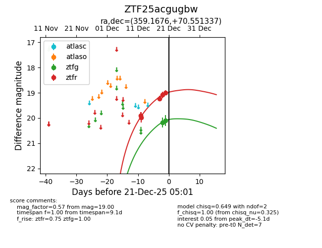
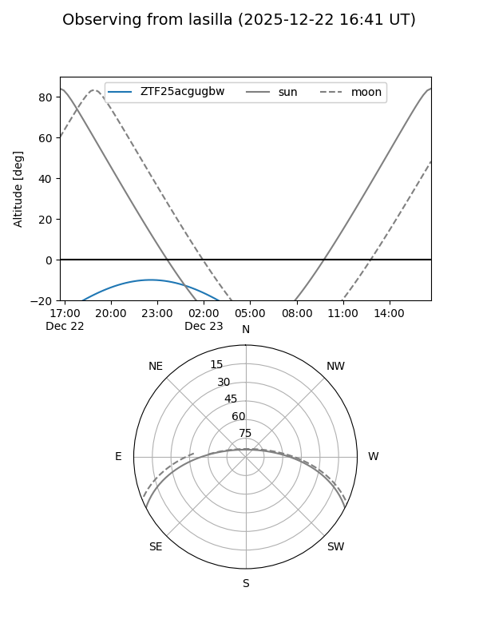
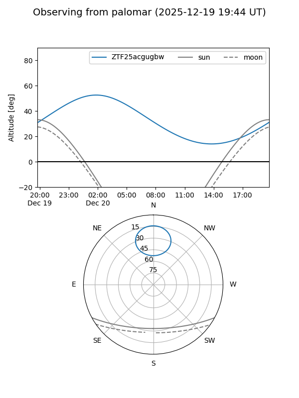
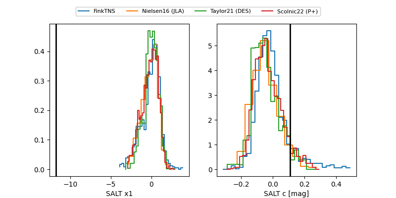

ZTF25acgugbw
Target ZTF25acgugbw at 2025-12-23 05:04
Aliases and brokers:
FINK: fink-portal.org/ZTF25acgugbw
Lasair: lasair-ztf.lsst.ac.uk/objects/ZTF25acgugbw
ALeRCE: alerce.online/object/ZTF25acgugbw
alt names
ZTF25acgugbw (ztf,fink_ztf)
Coordinates:
equatorial (ra, dec) = 359.1676,+70.55134
equatorial (HMS+DMS) = 23:56:40.21,+70:33:04.81
galactic (l, b) = (118.3652,+8.16673)
Flags:
Photometry:
last ztfg=19.64, ztfr=18.58
4 ztfg, 7 ztfr detections
Lightcurve

Visibility


Additional plots
